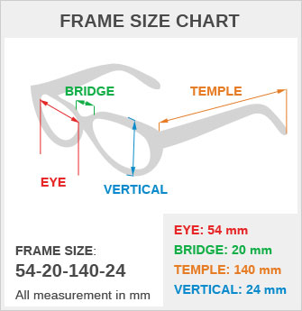
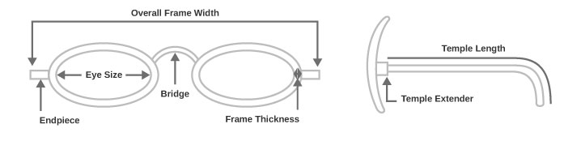

It is very important to verify the size of your eyes before you venture into the market looking for the perfect pair of frames to wear. This manual will help you decide what the pre-requisites are and how to go about it in a proper structured manner.
Let us first understand the measurement of the frame in this matter. We have to understand that a frame consists of 4 basic sizes: EYE, BRIDGE, TEMPLE AND VERTICAL. The descriptions for each are as under:
EYE SIZE: Eye size is basically the horizontal width of one of the frame’s lenses in millimeters.
BRIDGE SIZE: The distance in millimeters between two lenses is known as the bridge size. You can measure bridge size by taking the two closest points in two lenses.
TEMPLE SIZE: It is the length of your temple from one side to another, which includes your bend as well.
VERTICAL SIZE: The vertical height of your eyeglass lens is known as the vertical height. It is measured from tip to bottom of the frame. You can measure them from the horizontal line intersecting the top of lens to the line that is intersecting the bottom of the lens. This measurement is important if you are looking for lenses which are multifocal in nature.
DERIVE SIZE FROM THE FRAME
Have you ever looked minutely at the sides of the frame? Most of them have size information printed on them. Agreed, that they fade with time but you may find the lettering on the insides of the bridge. If you already own a sunglass or eyeglass, look inside the temple and find the size of your frame there.
Lettering faded already? No worries. You can follow this size chart and determine the measurement yourself:
The model number, mentioned on the side of a frame, indicates the measurement of different parts of a frame. The first figure indicates the Eye Size, the second figure indicates the bridge size and the third figure indicates the Temple size. For eg: If the model number is 54-20-140, it means the eye size is 54, bridge size is 20 and temple length is 140 (all units in mm). Our recommendation for different eye sizes is:
Small Eye Sizes : 40-48 mm Medium Eye Sizes : 49-54 mm Large Eye Sizes : 55-58 mm Extra Large : 58 mm and aboveTHE BEST WAY TO FIND THE APT FRAME SIZE
If you have been cozily using a particular frame of glass, or a pair of sunglass and you want the same level of comfort, it is better to determine your next purchase on the basis of size of your current glass. See what size your frame or sunglass is, and buy your next sunglass in same size.
New user? Not to worry. You can go to a store and try on sizes until the one that fits you just the way you wanted. Note the size and use that for further reference. If you like any particular model, make sure you have the model number as these models do come in different sizes, thus the specific model number would only be able to track the size you actually want.
TOTAL FRAME WIDTH
Now it is obvious that you would like to know the total width of the frame in order to make sure it will look perfect on your face. Your total frame would include endpieces, which are never measured. By endpiece, we mean the width of frame from edge of lens out to the frame edge where temples are connected with frame front. The endpieces range from minimum 2-6 mm to maximum 4-12 mm.
WANT TO MEASURE AND DETERMINE FRAME SIZE YOURSELF?
CONVERSION:
From INCHES to MILLIMETER : Multiply the measurement by 25.4 (1 inch = 25.4 mm)
From CENTIMETER to MILLIMETER : Multiply measurement by 10 (1 cm = 10 mm)
The design of the frame is important no doubt, but it also should fit you snugly. Otherwise, it would look disproportionate. And no one would like to see their glasses dangling a few inches down their nose. Moreover, this increases the risk of the glasses falling down and breaking. To avoid all the jeopardy, use this manual to get a frame of perfect size.